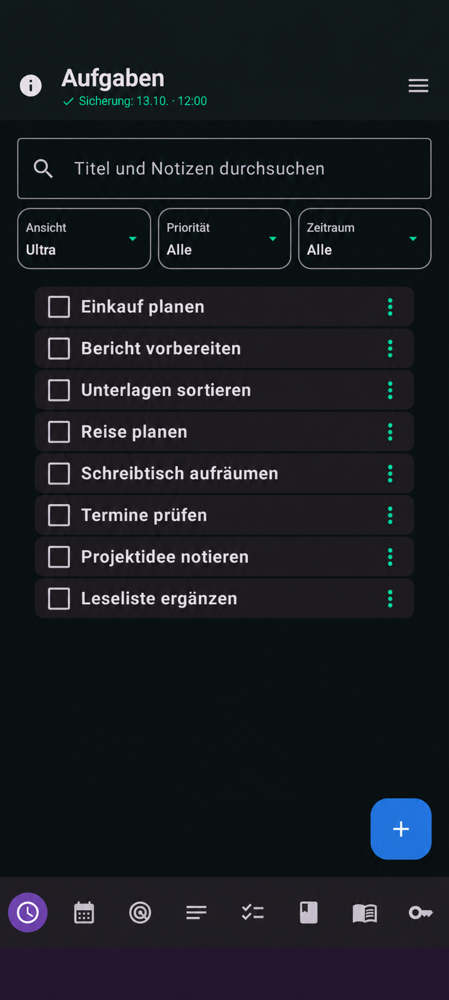
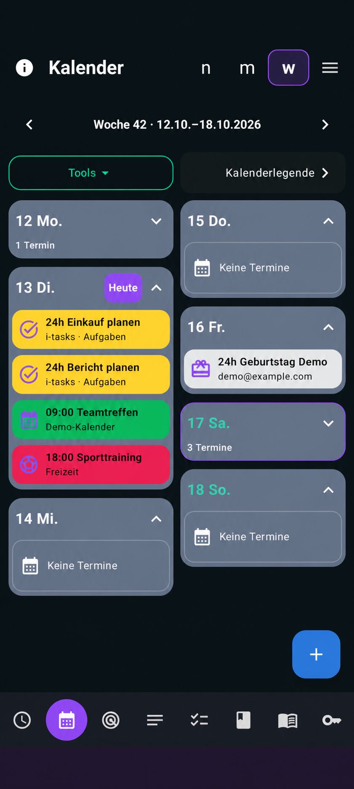
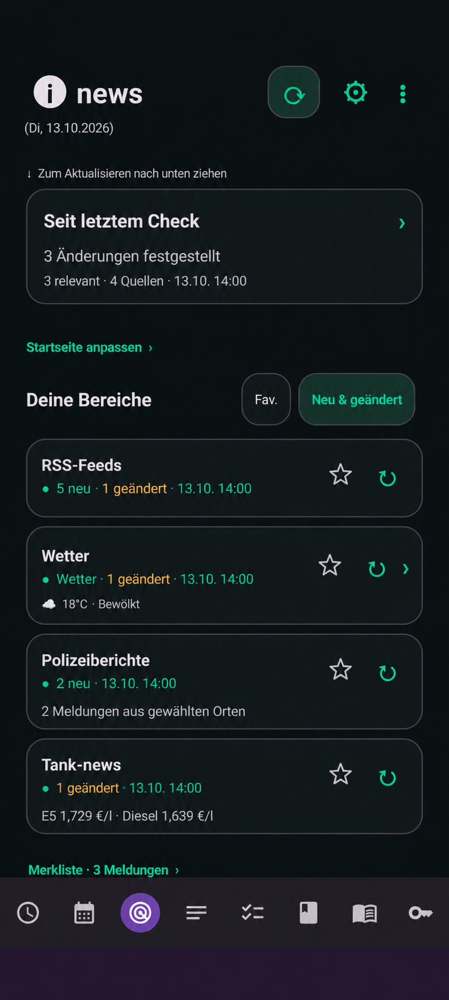
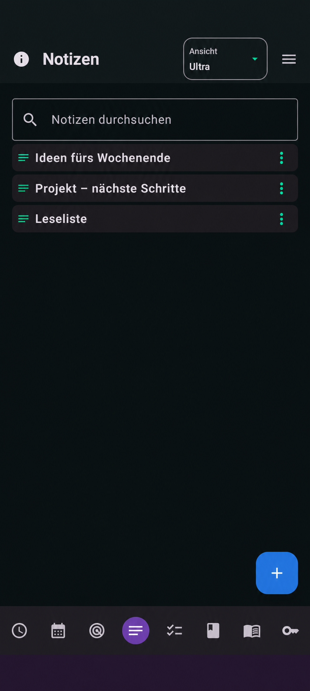
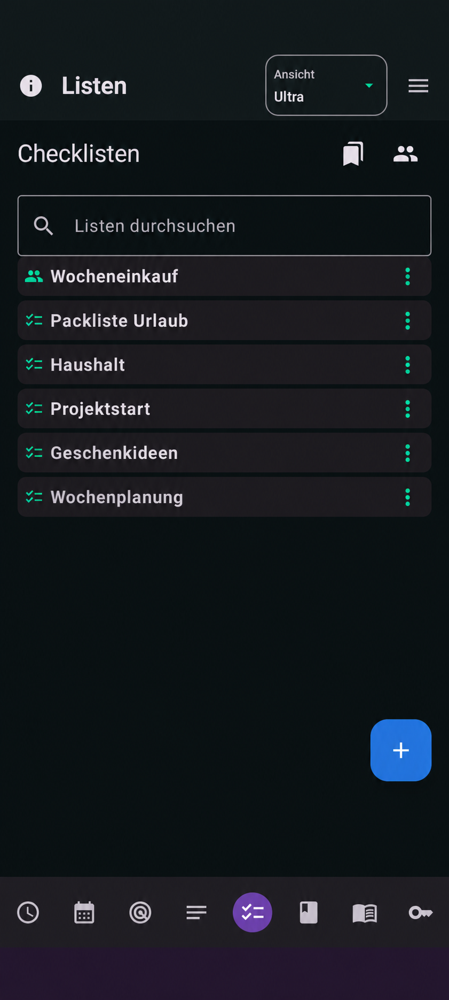
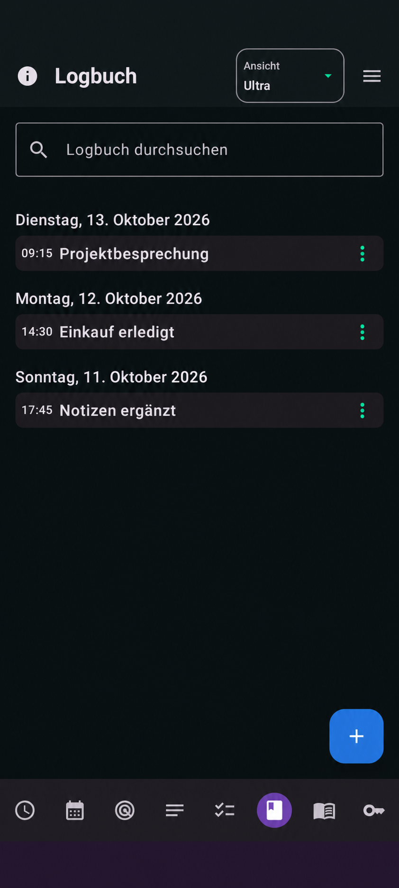
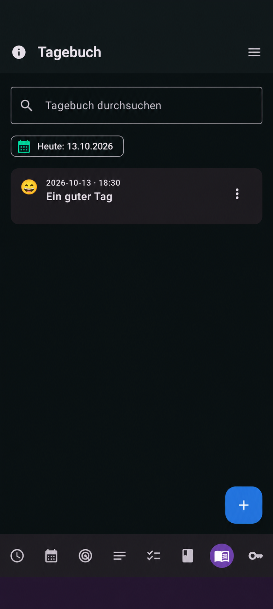
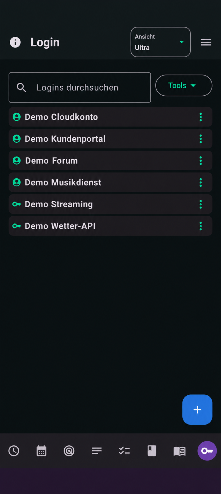

Dein Alltag. An einem Ort.
Android · Version 0.904 · BetaDein persönlicher Begleiter für Android
Was ansteht, was du festhalten möchtest und was dich interessiert: i-tasks verbindet Aufgaben und Termine mit Notizen, Listen, News und persönlichen Einträgen.
Android ab Version 8.0 · Direkte Installation als APK · Beta
Android ab 8.0 · 46,8 MB · Beta
Neu ab 0.904: Prüfe künftige Updates direkt in der App unter Mehr → Auf Updates prüfen. Eine neuere Version wird dir zum Download angeboten.
Planen und erledigen
Aufgaben, Schritte und Kalender verbinden.
Festhalten und wiederfinden
Notizen, Listen und persönliche Einträge ordnen.
Nach deinem Rhythmus
Ansichten, Quellen und Sicherungen einstellen.
Für die kleinen Dinge. Und die großen Pläne.
Du entscheidest, welche Bereiche du nutzt. Persönliche Inhalte liegen auf deinem Gerät. Kalender, Nachrichtenquellen und gemeinsame Listen kannst du nach Bedarf einrichten.
1. Aufgaben – Aus Vorhaben werden Schritte.
Halte Aufgaben mit Notizen, Prioritäten und Terminen fest. Einfache Checklistenpunkte helfen bei kurzen Abläufen; echte Unteraufgaben erhalten eigene Angaben und Termine. Schritte lassen sich frei abhaken oder nacheinander aktivieren.
- Wiederkehrende Aufgaben, Erinnerungen und Kalenderbezug.
- Listen und Filter für die passende Übersicht.
- Erledigen, Wiederöffnen, Papierkorb und Rückgängig.
- Eine besonders schlanke, einzeilige Ultra-Ansicht.
2. Kalender – Zeit und Aufgaben zusammen sehen.
Wochen- und Monatsansichten bringen Termine und geplante App-Inhalte zusammen. Auf Wunsch bindest du Kalender des Android-Geräts und ICS-Abonnements ein. Auch Notizen, Listen und Tagebucheinträge lassen sich im Kalender platzieren.
- Kalender mit eigenen Farben, Symbolen und Darstellungsregeln.
- Eine anpassbare Heute-Markierung.
- Tage in der Wochenansicht einklappen, wenn du mehr Übersicht möchtest.
- Vergangene Tage der laufenden Woche optional automatisch einklappen.
3. Notizen – Gedanken bekommen einen Platz.
Sammle Ideen, Gesprächsnotizen und Informationen mit Titel, Text und Schlagwörtern. Die Suche hilft beim Wiederfinden. Anheften und Farben machen wichtige Inhalte schnell erkennbar; Verknüpfungen verbinden sie mit Aufgaben und Kalender.
- Kompakt für mehr Inhalt in der Übersicht.
- Ultra für eine schlanke Zeile je Notiz.
- Die zuletzt gewählte Ansicht bleibt gespeichert.
- Notizen auf Wunsch für eine eingerichtete Gruppe freigeben.
4. Listen – Vom Einkaufszettel bis zur Checkliste.
Erstelle Listen für Einkäufe und wiederkehrende Abläufe. Der Einkaufsmodus bietet größere Bedienelemente. Mengen stehen vor dem Artikel und lassen sich mit Plus und Minus ändern. Kategorien und Geschäftszusordnungen helfen beim Sortieren.
- Stammartikel und Vorlagen für wiederkehrende Einträge.
- Dublettenerkennung, Verlauf sowie Kommentare und Antworten.
- Neu- und Geändert-Markierungen und geschütztes Rückgängig.
- Kompakt und Ultra mit gespeicherter Ansicht; optional gemeinsam nutzen.
5. News – Lesen, was dich interessiert.
Stelle deine RSS-Quellen zusammen und ordne Meldungen mit Themen, Such- und Sperrwörtern. Lesestände, Favoriten und eine Merkliste helfen, relevante Beiträge wiederzufinden. Verfügbare Artikelbilder erscheinen im Leser.
- Weitere Bereiche unter anderem für regionale Meldungen, Wetter und Warnungen.
- Bereits gespeicherte Inhalte bleiben beim Laden sichtbar.
- Neue Ergebnisse können schrittweise erscheinen.
- Online-Inhalte hängen von den gewählten Anbietern ab; einzelne Dienste benötigen eigene Zugangsdaten.
6. Logbuch – Abläufe nachvollziehen.
Halte Ereignisse und kurze Beobachtungen mit Datum und Uhrzeit fest. Tagesüberschriften ordnen deine Einträge chronologisch. Suche und Bearbeitung helfen dabei, Informationen später wiederzufinden und zu ergänzen.
- Einträge nach Tagen geordnet durchsehen.
- Kompakt oder einzeiliges Ultra wählen.
- Die zuletzt gewählte Logbuchansicht bleibt gespeichert.
- Einträge sind in der persönlichen Datensicherung enthalten.
7. Tagebuch – Raum für persönliche Rückblicke.
Erstelle persönliche Einträge mit Titel, Text, Datum und Uhrzeit. Ergänze eine Stimmung und Schlagwörter oder verknüpfe einen Eintrag mit einer Aufgabe. So kannst du Eindrücke festhalten und später daran anknüpfen.
- Einträge suchen und als Favoriten markieren.
- Persönliche Gestaltungsmöglichkeiten.
- Aufgabenbezug und Kalenderplatzierung.
- Das Tagebuch in eine verschlüsselte persönliche Sicherung aufnehmen.
8. Login – Zugangsdaten geordnet ablegen.
Verwalte Zugangseinträge mit Anbieter, Benutzername, Kennwort, URL und Notizen. Benutzername, Kennwort und Login-Notizen werden auf dem Gerät verschlüsselt gespeichert; der Schlüssel liegt im Android Keystore.
- Suche, Favoriten und angeheftete Einträge.
- Kompakt oder Ultra, mit gespeicherter letzter Ansicht.
- Optionaler App-Schutz durch Biometrie oder Gerätesperre.
- Geschützte Felder sind auch in der verschlüsselten persönlichen Sicherung enthalten.
9. i-assistent – Zum passenden Prompt.
Wähle einen Screenshot aus der Galerie oder teile ein Bild an i-tasks. Die Texterkennung verarbeitet lateinischen Text auf dem Gerät. Prüfe den erkannten Text, wähle eine Vorlage und ergänze bei Bedarf Ziel, Anrede, Länge oder Ton.
Du kannst auch ohne Screenshot arbeiten: Über „Text eingeben“ lässt sich ein Text selbst schreiben oder aus der Zwischenablage einfügen.
- Ein Vorlagenkatalog mit 38 Vorlagen in 10 Gruppen.
- 14 Screenshot-Vorlagen für diesen Arbeitsablauf.
- Vorlagen suchen, favorisieren, bearbeiten und exportieren.
- Den vorbereiteten Prompt kopieren und ChatGPT öffnen; Einfügen und Senden übernimmst du dort selbst.
Die Bereiche innerhalb von News
- RSS: Eigene Nachrichtenquellen, Themen, Lesestände und Merkliste.
- Wetter: Wetteransichten und Warnmeldungen für deine eingerichteten Orte.
- Softwareprodukt News: Meldungen zu Minecraft und deinen eingerichteten Softwareprodukten.
- Produkt News: Eingerichtete Produkte und deren vom Anbieter gemeldete Preisstände verfolgen.
- Regional: Regionale Quellen und Ereignisse im Blick behalten.
- Polizei: Polizeimeldungen aus den gewählten Quellen lesen.
- URLs: Eigene Weblinks geordnet ablegen und öffnen.
- Tank-Radar: Kraftstoffpreise an eingerichteten Tankstellen vergleichen.
- Pollen: Meldungen zu den gewählten Pollenarten ansehen.
- Gute-Laune-Mix: Eine musikalische Titelauswahl zusammenstellen und als Excel-Datei ausgeben.
Verfügbarkeit, Aktualität und Umfang der Online-Inhalte hängen von den jeweiligen Quellen und erforderlichen Zugängen ab.
Einblicke in die App
















Die folgenden Ansichten basieren auf App-Screenshots. Persönliche Einträge wurden für die Darstellung durch fiktive Demodaten ersetzt. Darstellung und Farben können je nach Gerät und Einstellungen abweichen.
Auch morgen noch da.
Sichern und gemeinsam arbeiten
Eine verschlüsselte persönliche Sicherung hält deine Daten für Wiederherstellung oder Gerätewechsel bereit. Wähle alle Inhalte, einzelne Bereiche oder nur Einstellungen. Vor dem Import siehst du eine Vorschau und entscheidest zwischen Zusammenführen und Ersetzen.
- Manuell sichern oder automatische Sicherungen einrichten.
- Intervall, Aufbewahrung und Ausrichtungsuhrzeit einstellen.
- Downloads oder eine von dir gewählte Drive-Datei als Ziel nutzen.
- Aufgabenlisten, Checklisten und Notizen optional über eine eingerichtete HTTPS-WebDAV-Verbindung in verschlüsselten Gruppen teilen.
Eine Uhrzeit, die zu dir passt: 12:00
Standard ist mittags. In den Einstellungen kannst du eine andere Ausrichtungsuhrzeit wählen.
Android kann einen automatischen Lauf durch Energiesparen oder niedrigen Akku verschieben. Nächster geplanter Lauf und letzte abgeschlossene Prüfung sind sichtbar. Eine neue Sicherungsdatei entsteht, wenn sich Inhalte geändert haben.
Mehr – Weitere Bereiche der App
Datensicherung
Sichere alle Inhalte, ausgewählte Bereiche oder Einstellungen verschlüsselt. Richte automatische Sicherungen mit deiner gewünschten Ausrichtungsuhrzeit ein und prüfe vor einer Wiederherstellung die Vorschau.
Gemeinsame Listen
Richte eine HTTPS-WebDAV-Verbindung ein und teile Aufgabenlisten, Checklisten und Notizen mit eingerichteten Gruppen. Gemeinsame Inhalte werden Ende zu Ende verschlüsselt übertragen.
Erledigt
Sieh abgeschlossene Aufgaben später wieder durch und öffne sie bei Bedarf erneut.
Papierkorb
Finde gelöschte, vom Papierkorb unterstützte Einträge wieder. Entscheide, ob du sie wiederherstellen oder endgültig löschen möchtest.
Einstellungen
Passe Startbereich, Darstellung, Kalender, News-Quellen, Aufgabenübertragung, App-Schutz und Datensicherung an deine Nutzung an.
Einmal installieren. In deinem Tempo einrichten.
Version 0.904 · Beta
Aktueller APK-Stand für die direkte Installation.
| Angabe | Wert |
| Datei | i-tasks.apk |
| Version | 0.904 · Beta |
| Größe | 46,8 MB / 44,6 MiB |
| Voraussetzung | Android 8.0 oder neuer |
| Bereitstellung | APK · Debug-Build |
SHA-256 zur Prüfung der unveränderten Datei
0202688a3737d5103cdab85a83dc8827bc2aa6e62f7b7fb9dda1723607ac01b1
So installierst du die App
- Vor einem Update sichern. Erstelle in i-tasks eine aktuelle Datensicherung und bewahre das Sicherungskennwort auf.
- APK auf dem Handy herunterladen. Öffne die Downloadseite auf deinem Android-Gerät und lade die Installationsdatei herunter.
- Installation erlauben. Öffne die APK. Falls Android nachfragt, erlaube der verwendeten Browser- oder Dateien-App die Installation aus dieser Quelle.
- Installieren und öffnen. Bestätige die Installation. Berechtigungen für Kalender und weitere Funktionen kannst du passend zu deiner Nutzung vergeben.
Bereits i-tasks installiert? Version 0.904 ist als Update der bisherigen Projektversion vorgesehen. Paketname und Signatur wurden beibehalten. Installiere über die vorhandene App, damit ihre Daten erhalten bleiben. Die bisherige App dafür nicht deinstallieren.
Version 0.904
Die aktuelle Beta von i-tasks verbindet Aufgaben, Kalender, News und persönliche Organisationsbereiche. Hier findest du die Installationsdatei und Hinweise zur Nutzung.
Gut zu wissen
Brauche ich ein Konto für i-tasks?
Die persönlichen Organisationsfunktionen benötigen kein eigenes i-tasks-Konto. Für externe Dienste, etwa Drive, gemeinsame WebDAV-Listen oder einzelne News-Anbieter, richtest du bei Bedarf deine eigenen Zugänge ein.
Funktioniert die App auch ohne Internet?
Gespeicherte Aufgaben, Notizen, Listen und persönliche Einträge kannst du auf dem Gerät nutzen. Neue News, Online-Kalenderabos, externe Sicherungsziele, Gruppenabgleich, die manuelle Updateprüfung und ChatGPT benötigen eine Internetverbindung.
Wie bekomme ich spätere Updates?
Ab Version 0.904 findest du unter Mehr ganz unten Auf Updates prüfen. Erst beim Antippen prüft i-tasks den freigegebenen Updateordner auf Google Drive. Die App erkennt neuere Versionen an der Versionsnummer im APK-Dateinamen und bietet den Download an.
Vor dem Installationsangebot prüft i-tasks die tatsächliche APK-Version, die App-Kennung und die digitale Signatur. Download und Installation erfolgen nach deiner Bestätigung; es gibt keine automatische Hintergrundinstallation. Die Downloadseite bleibt ebenfalls verfügbar. Ältere App-Versionen ohne Updatebutton aktualisierst du zunächst über die hier angebotene APK.
Bleiben meine bisherigen Sicherungen verwendbar?
Das Update auf 0.904 verändert das Sicherungsformat nicht. Bisherige unterstützte persönliche Sicherungen bleiben verwendbar. Für die Wiederherstellung benötigst du das zugehörige Kennwort; Zugänge und Berechtigungen auf einem neuen Gerät richtest du gegebenenfalls erneut ein.
Wird mein Screenshot automatisch an ChatGPT gesendet?
Der i-assistent erkennt den Text auf dem Gerät und stellt daraus mit deiner Vorlage einen Prompt zusammen. Die Schaltfläche kopiert den Prompt und öffnet ChatGPT. Du prüfst ihn dort, fügst ihn ein und sendest ihn selbst.
Was bedeutet Beta?
i-tasks wird weiterentwickelt. Die angebotene Datei ist der bisher geprüfte Debug-Build des Projekts. Die Funktionsprüfung ersetzt keine Prüfung auf jedem Handymodell. Sichere deine Daten vor Updates und bevor du die App auf einem anderen Gerät einrichtest.
Daten, Verbindungen und Kontakt
Diese Downloadseite
Diese Seite enthält keine eigenen Analyse-, Werbe- oder Trackingdienste, keine extern geladenen Schriftarten und kein Kontaktformular. Die Webseite wird über GitHub Pages bereitgestellt, die Installationsdateien über GitHub Releases. Bei deren Nutzung verarbeitet GitHub technische Verbindungs- und Nutzungsdaten gemäß seiner Datenschutzerklärung.
Der Downloadzähler fragt die öffentlich verfügbare Anzahl der APK-Downloadabrufe bei GitHub ab. Er verwendet keine eigenen Besucherkennungen.
Die App
Persönliche Organisationsdaten werden auf dem Gerät gespeichert. Je nach eingerichteter Funktion verbindet sich die App mit Nachrichtenquellen, Kalenderanbietern, WebDAV-Speicher oder einem gewählten Sicherungsziel.
Beim Antippen von „Auf Updates prüfen“ verbindet sich i-tasks mit dem öffentlichen Updateordner auf Google Drive; beim bestätigten Download mit den Google-Downloadservern. Dabei fallen technische Verbindungsdaten an. Dafür ist keine Google-Anmeldung erforderlich. Aufgaben, Notizen und Zugangsdaten werden dabei nicht übertragen.
Die Texterkennung im i-assistenten verwendet Google ML Kit: Bild und erkannter Text werden dabei auf dem Gerät verarbeitet. Das SDK kann technische Leistungs- und Nutzungsdaten an Google übertragen; weitere Angaben stehen in den ML-Kit-Bedingungen.
Bei deiner Übergabe an ChatGPT gelten die Bedingungen und Datenschutzhinweise dieses Dienstes.
Kontakt und Anbieterangaben
Josef Willmann
Kontakt: i-tasks@im-kinzigtal.de